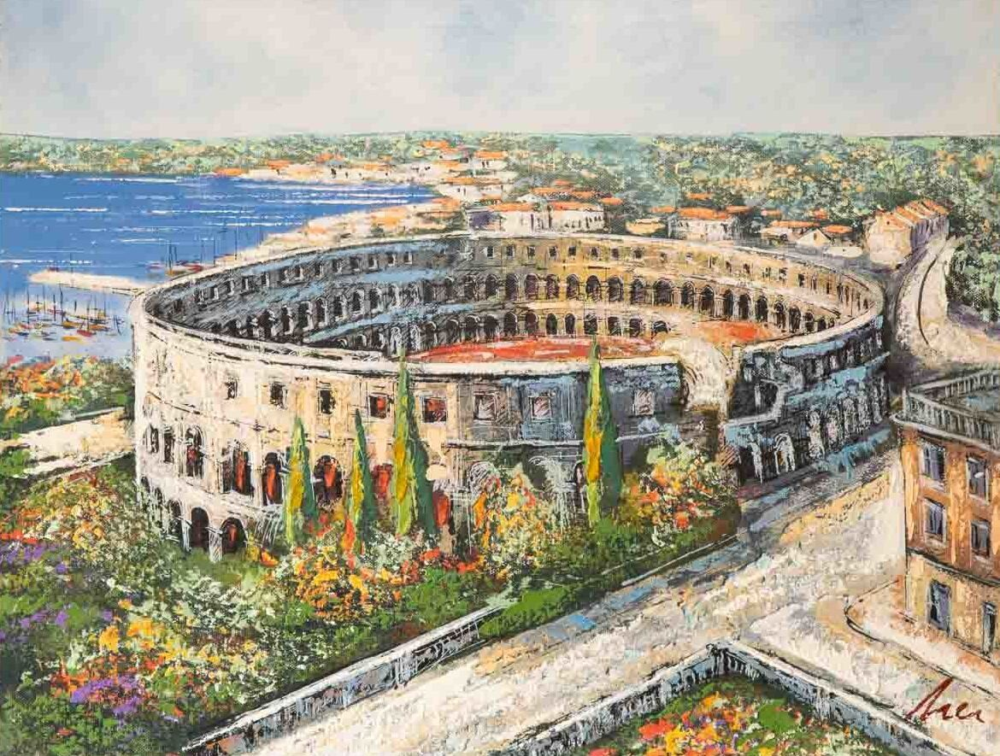
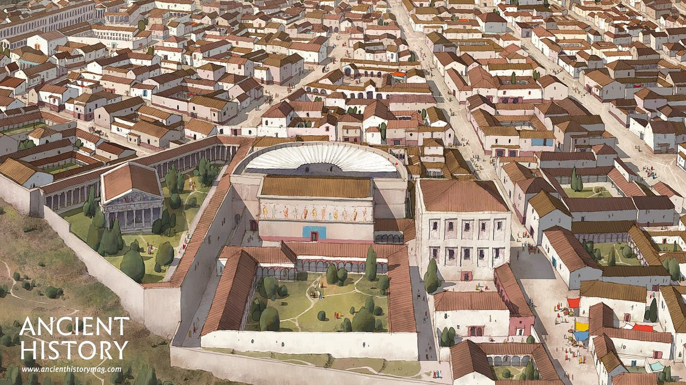
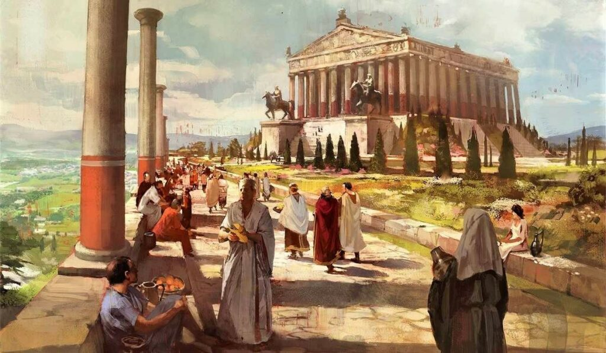
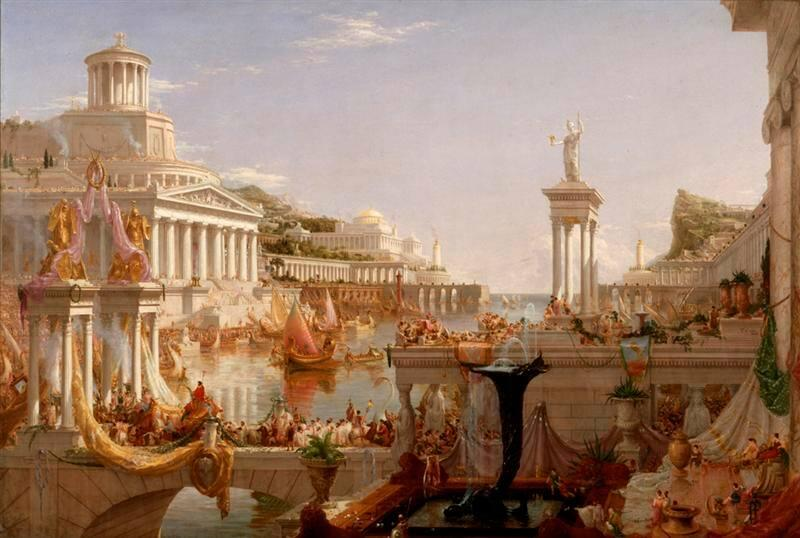
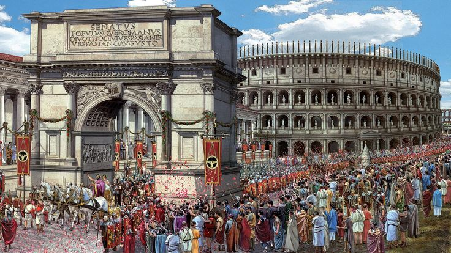

The cities of the Roman Empire, bathed in the radiant glory of antiquity, were nothing short of mesmerizing gems strewn across the vast expanse of the ancient world. Each urban center bore the indelible mark of Roman ingenuity and grandeur, a testament to a civilization at the zenith of its power and sophistication. From the majestic grandeur of Rome herself, where the Colosseum rose like a colossal titan, to the coastal allure of Carthage, where azure waters met the remnants of a once-mighty civilization, the beauty of these cities was unparalleled. Pompeii, frozen in time by the fiery embrace of Mount Vesuvius, revealed the intricate mosaics and frescoes that adorned homes, while Ephesus stood as a symphony of marble, echoing the glory of ancient Greece and Rome. Each street, each column, each temple, whispered tales of a glorious past, inviting awe and wonder. In this sprawling empire, beauty knew no bounds, and the cities were living poetry, etched in stone and memory for all eternity.
One of the best preserved Roman amphitheaters. The city has a long tradition of wine making, fishing, shipbuilding, and tourism. It was the administrative centre of Istria from ancient Roman times
Largely preserved under the ash, the excavated city offers a unique snapshot of Roman life, frozen at the moment it was buried, although much of the detailed evidence of the everyday life of its inhabitants was lost in the excavations. It was a wealthy town, with a population of ca. 11,000 in AD 79, enjoying many fine public buildings and luxurious private houses with lavish decorations, furnishings and works of art which were the main attractions for the early excavators.
The city was famous in its day for the nearby Temple of Artemis (completed around 550 BC), which has been designated one of the Seven Wonders of the Ancient World.
Carthage, previously a Punic city, was one of the most important trading hubs of the Ancient Mediterranean and one of the most affluent cities of the classical world.
While Roman mythology dates the founding of Rome at around 753 BC, the site has been inhabited for much longer, making it a major human settlement for almost three millennia and one of the oldest continuously occupied cities in Europe.
The architecture of the Roman Empire stands as an unrivaled testament to human ingenuity and artistic prowess. In Rome, the eternal city, monumental marvels like the Colosseum and the Pantheon cast shadows that whispered tales of unparalleled engineering and vision. Pompeii, frozen in time, unfurled intricate mosaics and frescoes that transported us to the heart of ancient life. Ephesus, with its grand temples and meticulously crafted theaters, spoke of an empire's dedication to perfection. Pula's stunning amphitheater showcased architectural brilliance in stone, while Carthage, nestled by the azure waves, bore witness to the empire's diverse architectural influences. Each of these cities, a symphony in stone, was a living embodiment of Roman architectural excellence, captivating the world then and now with their timeless beauty.
If anyone harbors questions about the enigmatic Roman Empire or harbors doubts about the unparalleled beauty of its cities, I stand ready as your source of knowledge and enthusiasm. Feel free to reach out, and together, we can embark on a journey to explore the splendid wonders of this ancient realm and its magnificent urban treasures.